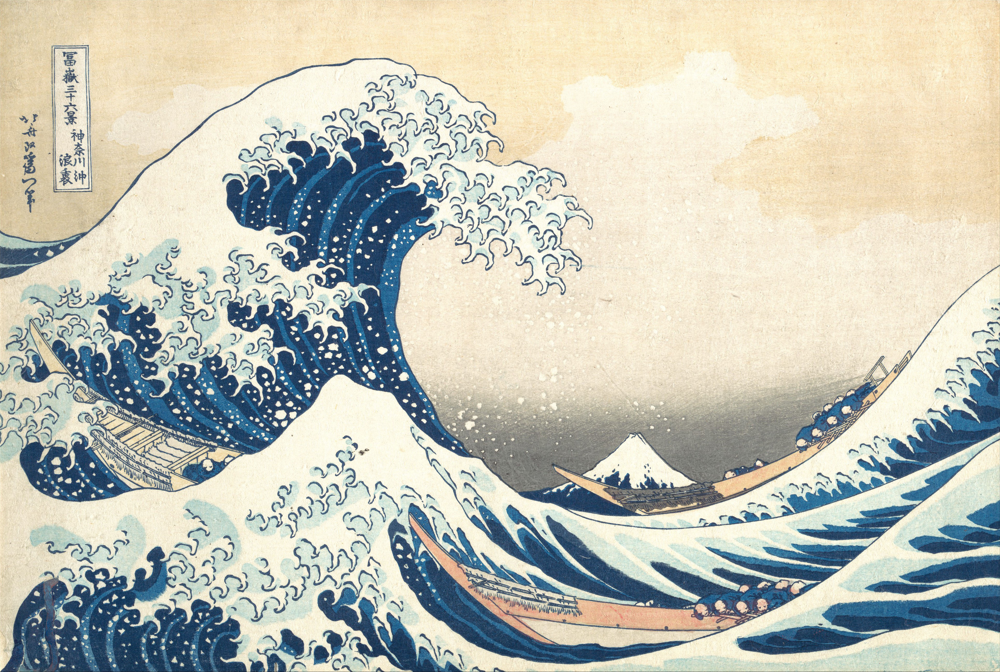
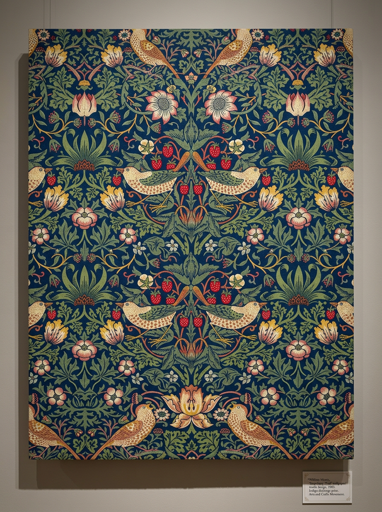
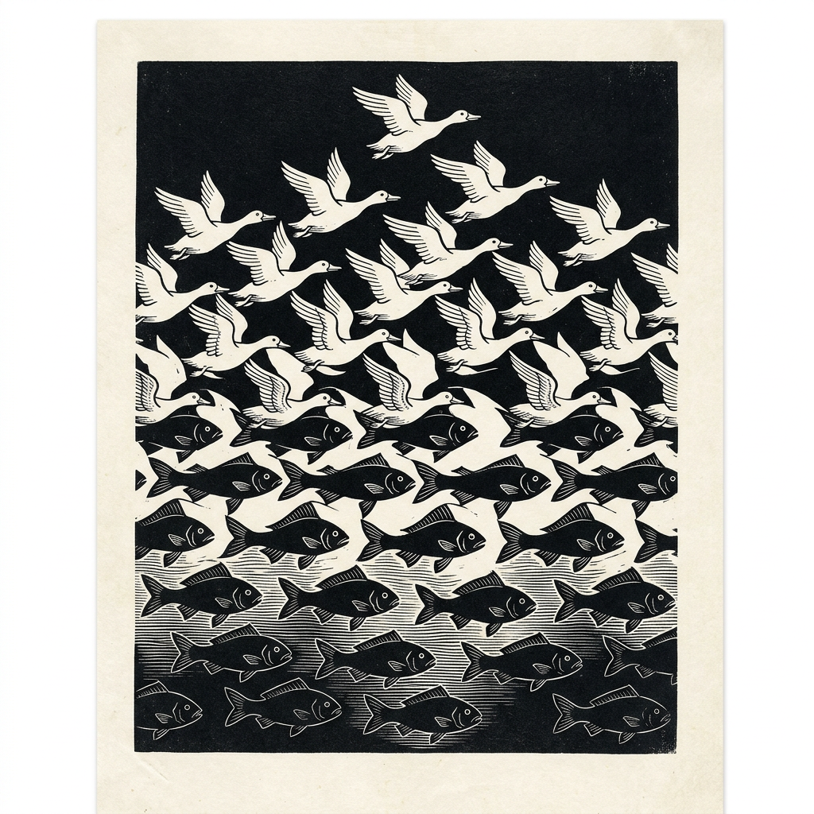

Lesson 2.1
Look around you.
Do you see repetition?
Patterns are everywhere. In the bark of a tree, the veins of a leaf, the tile beneath your feet.
Step 1
Find one pattern
near you right now.
Not in an image — in reality.
Look at fabric, floor, wall, skin, a plant.
Step 2
Move closer.
What exactly repeats?
Select all that apply.
References

Hokusai did not copy waves. He broke the wave into rhythm and built it again.

Morris found the principle behind the plant. Changes in direction and color prevent mechanical repetition.
Step 3
Take a page.
Draw the pattern you found.
Not the object —
only the repetition.
Step 4
Pause.
Is the repetition even or changing?
Let the rhythm change —
speed up, slow down, expand.
Step 5
Change only one thing
on the page.
Notice what happens to the pattern when one rule changes.
Observe
Pause.
Look.
The pattern changed —
but it is still recognizable.

This is what artists do.
They do not copy — they break apart and build again.
Pattern is a language.
Now you are speaking it.
You are not only reading it —
you are building with it.